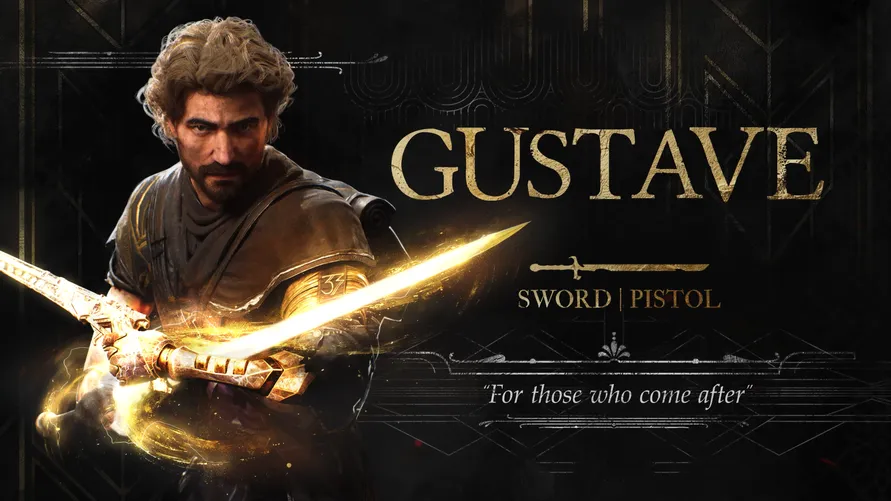
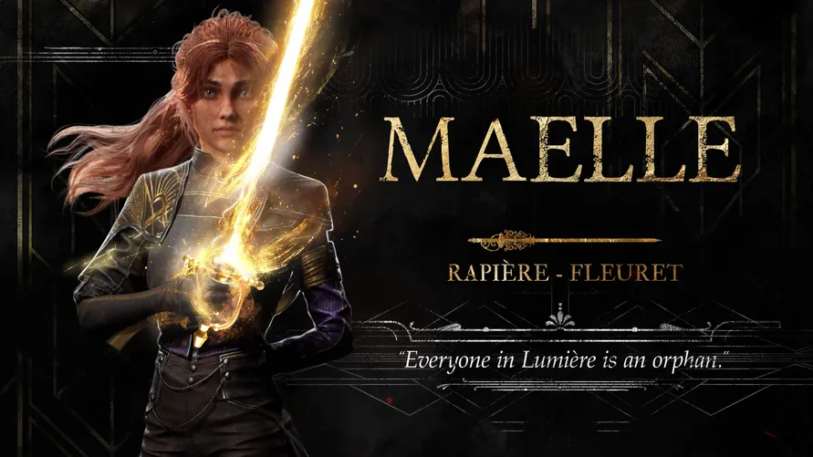
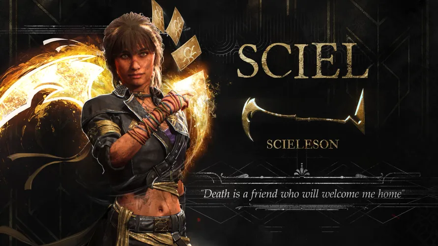
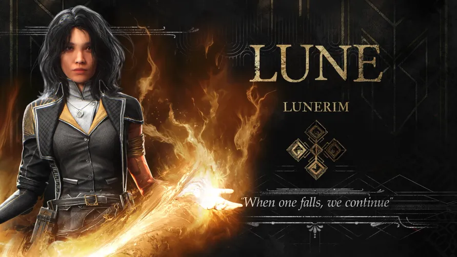

Bir Yıl. Tek Bir Görev: Paintress'i Yok Et.
Her yıl, Paintress uyanır ve lanetli monoliti üzerine bir sayı çizer. Bu sayı, o yıl içinde ölecek olan herkesin yaşını temsil eder. Yıl sona erdiğinde, sayının laneti gerçekleşir ve o yaştaki herkes bir anda yok olur. Bu döngü yıllardır devam etmektedir. Her yıl, Expedition yola çıkar ve Paintress'i yok etmeye çalışır. Bu, 33. Expedition'ın hikayesidir.

- Lanetli bir dünya
- Zamana karşı bir yarış
- Umutsuz bir görev
Daha fazla bilgi için resmi siteyi ziyaret edebilirsiniz.
Expedition 33'ün Kahramanları
Bu tehlikeli görevde, farklı geçmişlerden ve yeteneklerden gelen bir grup kahramana liderlik edeceksiniz. Her birinin bu yolculuğa katılmak için kendi sebepleri var. İşte Expedition 33'ün cesur üyeleri:
Gustave

Expedition 33'ün bir üyesi olan Gustave, Paintress'in ölüm döngüsünü kırmak için yola çıkan cesur savaşçılardan biridir. Görevdeki rolü ve geçmişi gizemini korusa da, bu umutsuz savaşta önemli bir rol oynayacaktır.
Maelle

Maelle, Expedition'ın bir diğer önemli üyesidir. Takıma yetenekleri ve kararlılığıyla katkıda bulunur. Paintress'e karşı verilen bu mücadelede, onun da kişisel sebepleri ve hedefleri bulunmaktadır.
Sciel

Gizemli bir görünüme sahip olan Sciel, Expedition 33'e kendi benzersiz yetenekleriyle katılır. Yolculuk boyunca onun da sırları ve motivasyonları ortaya çıkacaktır.
Lune

Lune, takımın bir diğer vazgeçilmez üyesidir. Paintress'in lanetini sona erdirme görevinde, onun da üstleneceği kritik bir rol vardır. Ekip, ancak birlikte çalışarak imkansızı başarabilir.
Karakterler hakkında daha fazla detayı resmi sitede bulabilirsiniz.
Belle Époque'tan Esinlenen Dünya ve Sıra Tabanlı Savaş
Oyun, Belle Époque döneminin fantastik bir versiyonunda geçiyor. Bu eşsiz sanat tarzı, sıra tabanlı RPG mekanikleri ile gerçek zamanlı reaktif komutları birleştiren yenilikçi bir savaş sistemi ile tamamlanıyor.

- Gerçek zamanlı reaktif savaş sistemi
- Özelleştirilebilir karakterler ve teçhizat
- Keşfedilecek geniş ve gizemli bir dünya
Oyunun geliştirici günlüklerini okumak için geliştirici blogunu ziyaret edebilirsiniz.